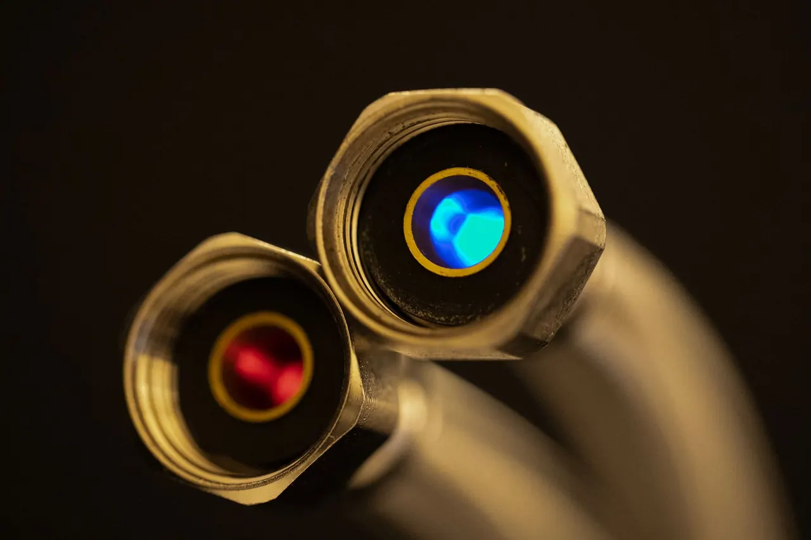
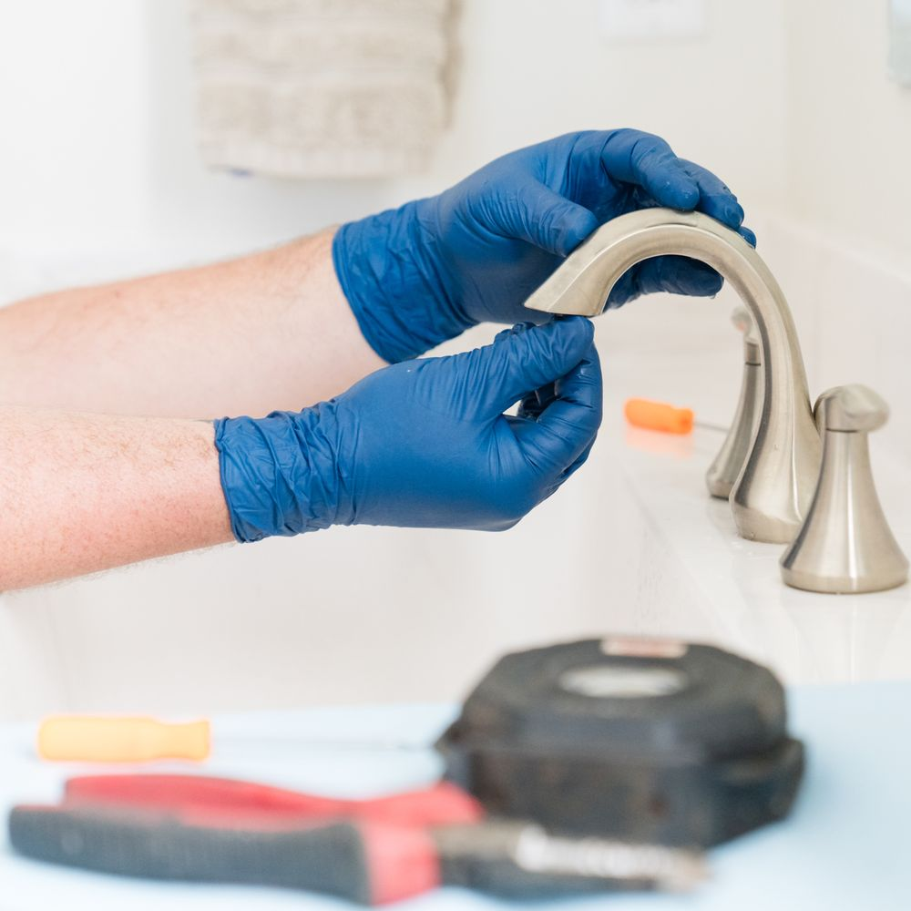

Serving Greer and nearby areas
Leak detection Greer SC that finds the leak first
When a water bill jumps or a floor feels warm, our leak detection Greer SC crew pinpoints the source with thermal imaging and acoustic gear before we open anything up.
- 5Services from one local team
- 2Areas served around Greer
- Look firstWe trace the leak before opening anything
- Test afterEvery repaired line gets pressure tested

Local leak detection Greer SC you can call today
We start by reading the meter and testing line pressure. Then we listen along the pipe and scan floors with a thermal camera. You see the readings and photos before we open a wall.
Findings you can see
Photos of the leak and the repair
Marked repair point
We cut only where the leak is
Line test at the end
Pressure checked before we leave
Leak detection services Greer SC homeowners trust
Every leak leaves a trail, and our job is to read it. We handle water leak detection Greer SC calls for slab leaks, pool leaks, underground lines and everyday plumbing drips.
Water Leak Detection
We trace water line leaks and high water bills using acoustic microphones, moisture meters and pressure testing.
Pool Leak Detection
Losing an inch of water a day usually means a pool leak, not evaporation.
Slab Leak Detection
A warm spot on the floor or a spike in the water bill often points to a slab leak under your foundation.
Underground Leak Detection
Buried water and irrigation lines leak quietly until the ground stays soggy or the bill jumps.
Plumbing Leak Detection
Dripping supply lines, failing fittings and pinhole leaks in copper pipe waste water and grow mold behind cabinets.


What the first call covers
- What you are seeing
- Meter and pressure check
- Where the line runs
- Access points on site
- Photos of what we find
- Readings shown on screen
- Repair point marked
- Line tested after repair
Why our leak detection Greer SC crew stands out
Leak detection is a skill, not a guess. We invest in the tools that find leaks without demolition, and we explain what we find in plain language.
How our leak detection process works
We keep it simple: find the leak, show you where it is, fix it, then prove the line holds.
-
Step 1
Call and questions
You call and tell us what you are seeing: a high water bill, a warm floor, a soggy yard, a running meter.

-
Step 2
On-site inspection
A tech walks the property with a moisture meter, pressure testing gauge and thermal imaging camera.

-
Step 3
Pinpoint and explain
We confirm the leak with the right tool, whether that is a tracer gas leak detector, pipe inspection camera or ultrasonic leak detector.

-
Step 4
Repair and line test
We repair the line with copper pipe, PEX tubing or PVC pipe and proper fittings, then pressure test the run again.

Water leak problems we solve in Greer
Most Greer leak calls start with one of these five symptoms. Each one points to a different kind of leak, and each one has a fix we handle regularly.
Water bill doubled and the meter never stops spinning
- What we do
- A meter that spins with every fixture off means water is escaping somewhere between the meter and the house.
- Call right away if
- The meter spins with every fixture off.
Warm spot on the floor and a faint sound under it
- What we do
- That is the classic slab leak signature.
- Call right away if
- The floor is warm or the stain is growing.
Soggy patch in the yard that never dries out
- What we do
- An underground pipe leak or irrigation break keeps that spot wet year-round.
Pool losing an inch of water a day
- What we do
- That is more than evaporation. We pressure test the pool plumbing, check fittings and the shell, and use leak detection dye to confirm the break.
Musty smell and soft drywall near a bathroom
- What we do
- Hidden leaks behind walls grow mold fast in South Carolina humidity.
What Greer customers say
Our water bill jumped from $60 to $190 in one month and I could not find anything. The tech showed up, listened along the wall with a microphone, and had the slab leak marked in under an hour. They cut one small section of floor, fixed the copper line, and tested it before they left. Bill is back to normal.
Marisol V.Homeowner, Downtown Greer
I called about a soggy spot in the yard that had been wet since spring. They traced it with a tracer gas detector and found a cracked irrigation line under the driveway. Repaired it the same visit and did not tear up the whole yard. Fair price and they explained everything.
Devon R.Homeowner, Greer Station
Pool was losing about an inch a day and I was sure it was evaporation. They pressure tested the lines, found a leak at the skimmer, and had it fixed in an afternoon. Honest guys, showed me the readings on the gauge. I would use them again.
Priya N.Pool Owner, ZIP 29650
Warm spot on the kitchen floor had me worried about a slab leak. They scanned it with the thermal camera, confirmed it, and gave me a written price before cutting anything. Repair took most of a day and the floor is dry now. Only reason for four stars is the scheduling window was a little wide.
Terrence B.Homeowner, Greenville County
We manage a small retail building near Greer Station and had a musty smell in a back room. Their tech found a pinhole leak in the copper pipe behind the wall, repaired it, and tested the line. No mold spread and no drama. They know commercial buildings too.
Hana K.Property Manager, Greer Station
Called at 9 p.m. with water coming up through the garage floor. They walked me through shutting off the main and had a tech out first thing the next morning. Found an underground line leak, fixed it, and tested it. Straight answers the whole way.
Luis A.Homeowner, ZIP 29651
Leak detection across Greer and Greenville County
We work all over Greer, from the older homes and shops around Downtown Greer and Greer Station to the newer subdivisions off Highway 14 and Wade Hampton.
Do we cover your part of Greer?
Type your ZIP code or town. If you are not listed, call and ask.
Greer ZIP codes
- 29651
- 29650
- 29652
Service areas
Leak detection Greer SC questions
These are the questions we get most from Greer homeowners and business owners. If yours is not here, call us and we will answer it straight.
Still have a question?
Describe what you are seeing and we will point you to the right next step.
+18644286579You get a written price before we start.
We use acoustic microphones, thermal imaging cameras and pressure testing gauges on every call, hand you photos of what we found, and test the line after the repair. Ask any company what tools they bring and whether the inspection fee comes off the repair.
If water is coming through a floor or wall, shut off the main and call us at +1 864-428-6579. We will walk you through the shutoff and get a tech out fast.
Check three things: the tools they carry, whether they give a written price before opening anything, and whether they test the line after the repair. A real leak detection service in Greer SC will use electronic leak detection equipment like acoustic mics and thermal cameras, not just a flashlight and a guess. Ask for photos of the leak and the finished repair.
Yes. Slab leaks are one of the most common calls we run in Greer, and water leak detection works well on them. We scan the floor with a thermal imaging camera to find the warm line, confirm it with acoustic gear, and mark the repair point so we cut one small section instead of breaking up the whole slab. Most slab repairs are finished in a day.
Book leak detection Greer SC before the damage spreads
+18644286579A hidden leak costs more every day you wait. Call Greer Leak Detection Pros at +1 864-428-6579 for a same-day inspection, a written price, and a repair that gets tested before we leave.